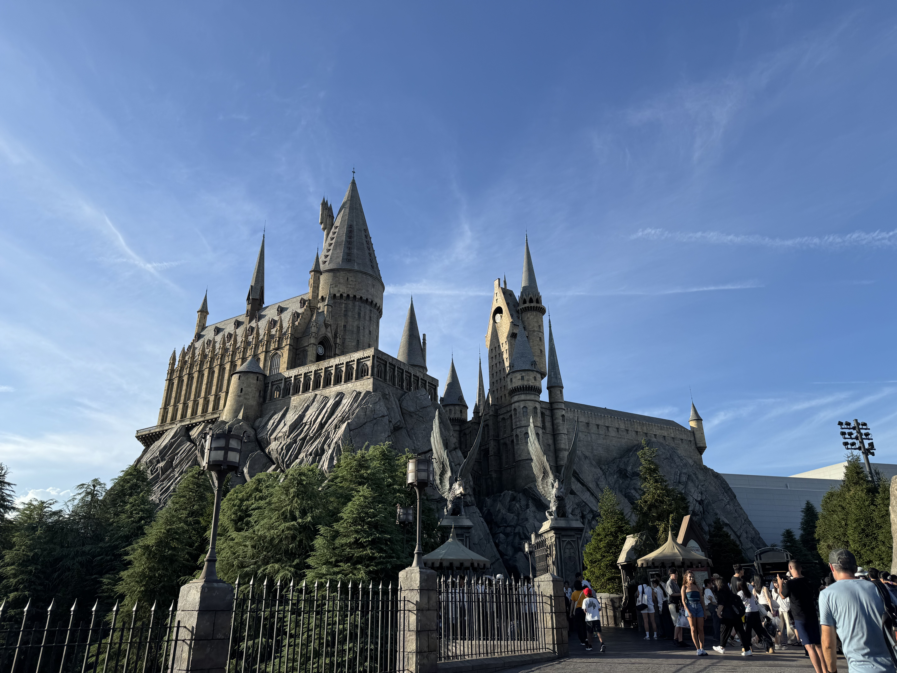
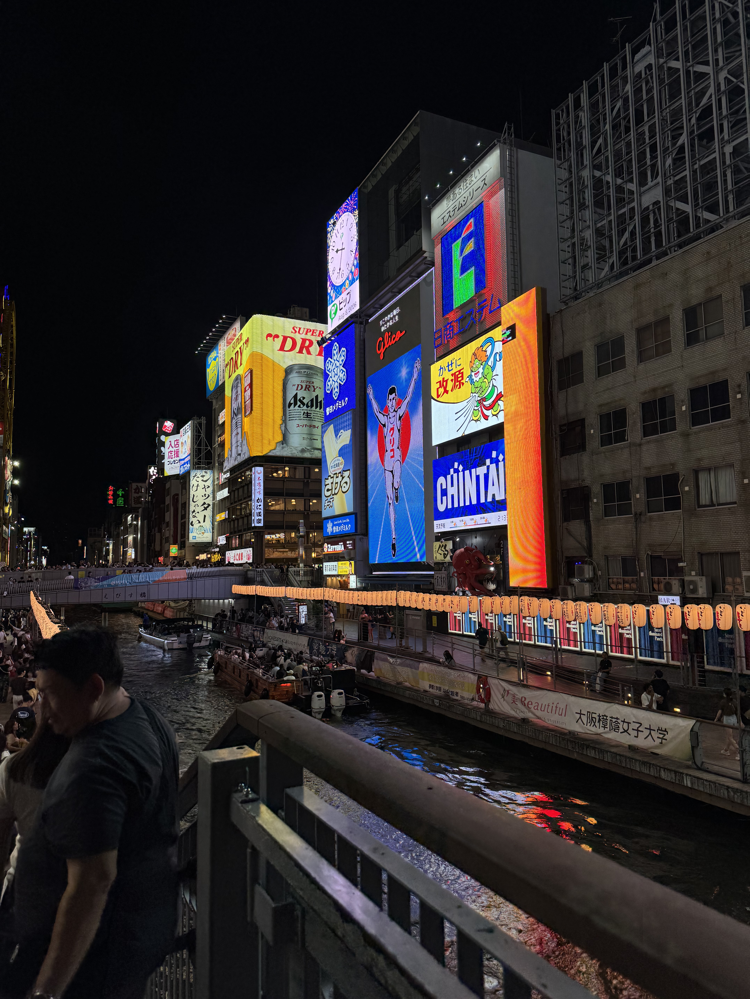
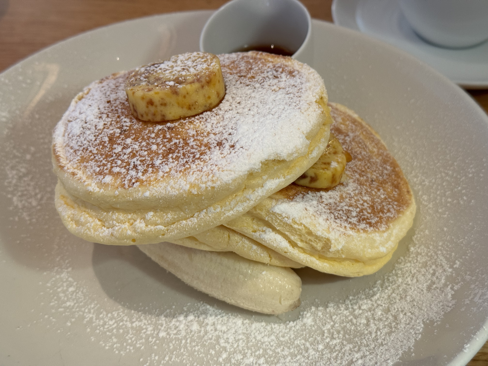
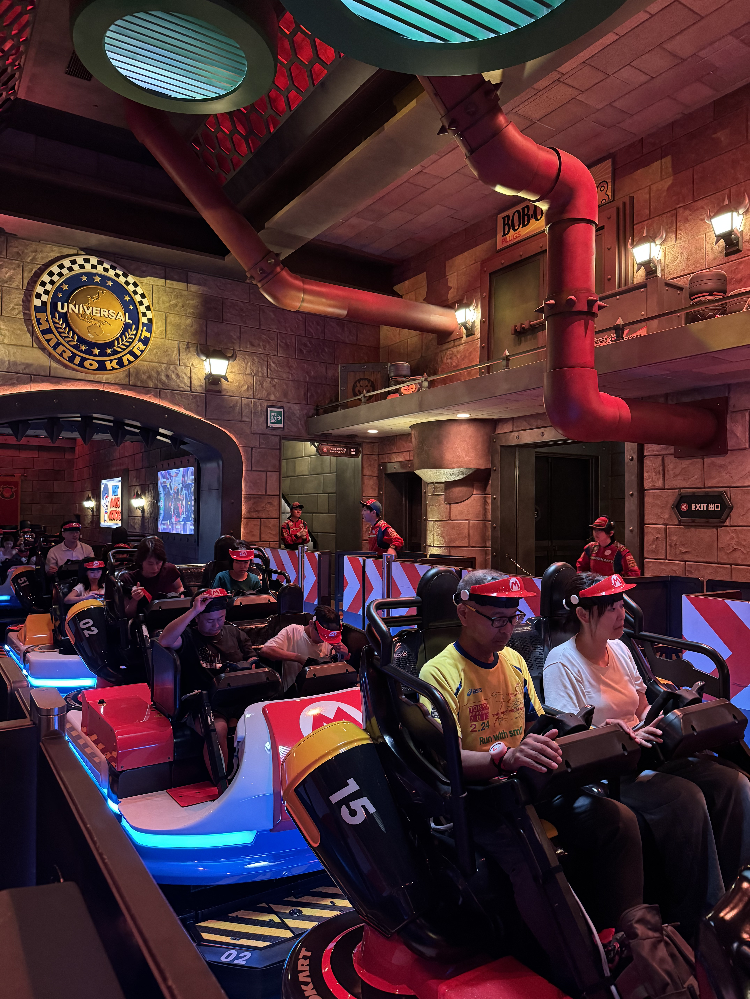
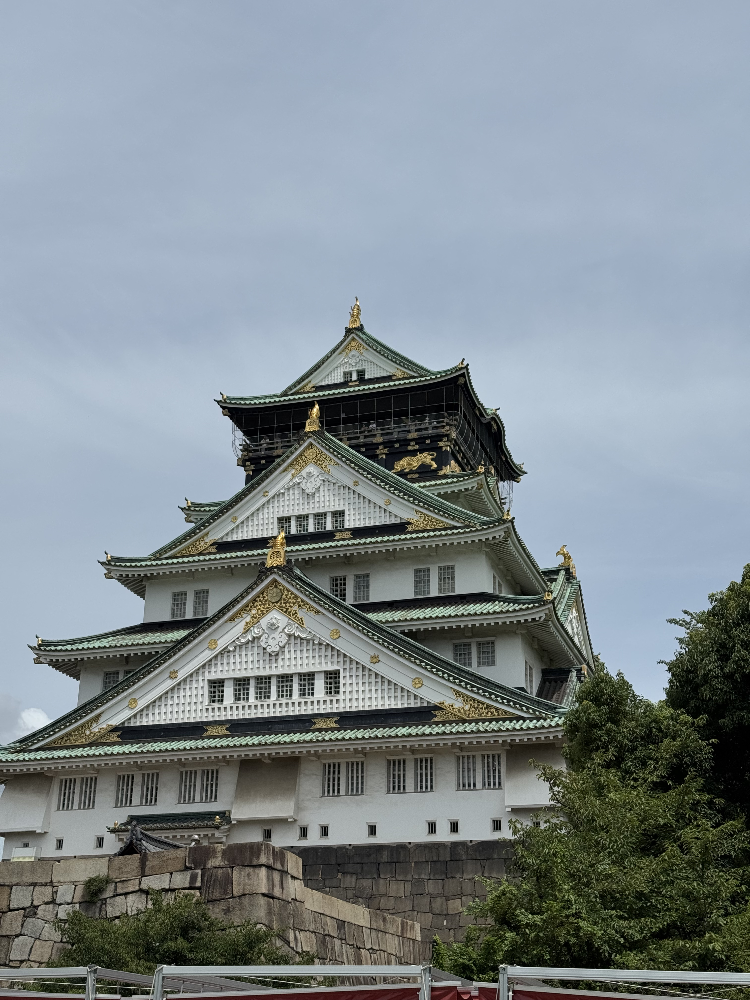
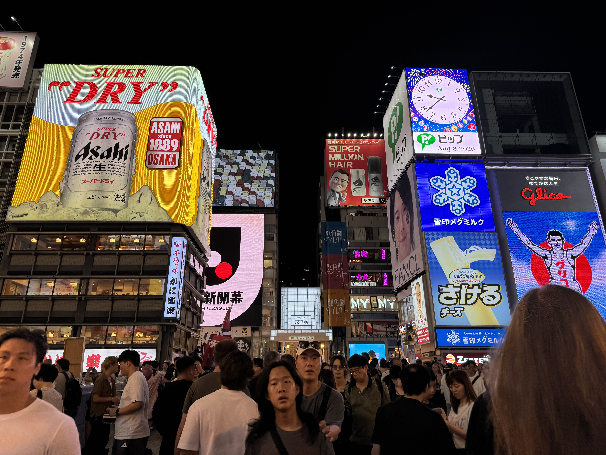

Осака
Осака — это город контрастов, где старинные храмы соседствуют с неоновыми вывесками и огромными торговыми районами
Навигация по странице
Раздел 1. Достопримечательности Осаки
В Осаке можно сходить в один из самый крутых тематических парков в мире, попробовать уличную еду на Дотонбори, а потом оказаться в тихом парке у замка.
Основные достопримечательности
- Замок Осака
- Дотонбори
- Universal Studios Japan
- Океанариум Каюкан
- Синсэкай и Цутэнкаку
Известные районы Токио
- Умэда
- Намба
- Дотонбори
- Синсайбаси
Что можно увидеть в разных районах
-
Умэда
- Смотровая площадка Umeda Sky Building
- Гранд-Фронт Осака
-
Намба
- Дотонбори
- Улица Синсайбаси
- Храм Ходзэндзи
-
Синсэкай
- Башня Цутэнкакуо
- Парк Тенсиба

Фотография Дотонбори
Нажмите на миниатюру, чтобы открыть изображение в большом размере 600×400 пикселей.

Миниатюра является графической гиперссылкой на изображение большого размера.
К началуРаздел 2. Еда в Осаке
В Осаке еда такая же, как и в Токио и Киото, но на центральной улице - Дотонбори - можно найти очень много разного стритфуда
Популярные блюда
- Суши
- Рамен в ресторане ICHIRAN
- Вагю
- Свинина в кляре
- Воздушные десерты

Самые вкусные панкейки в моей жизни
(Их мы ели в Токио и я не могла их не вставить. К сожалению, уличную еду в Осаке я не фотографировала)Популярные места в Осаке
В таблице представлены некоторые популярные места Осаки.
| Место | Описание | Изображение | Подробнее |
|---|---|---|---|
| Universal Studios Japan | Популярный тематический парк развлечений. Некоторые зоны эксклюзивные и не имеют аналогов в других парках сети |
 |
Ссылка на google maps |
| Замок Осака | Это одна из самых известных исторических достопримечательностей Японии и главный символ города. Возведенный в 1583 году, замок сыграл ключевую роль в объединении страны |
 |
Ссылка на google maps |
| Дотонбори | Это самая известная и оживленная улица в Осаке, которая тянется вдоль городского канала. Это главное место для прогулок, тусовок и еды |
 |
Ссылка на google maps |
К началу